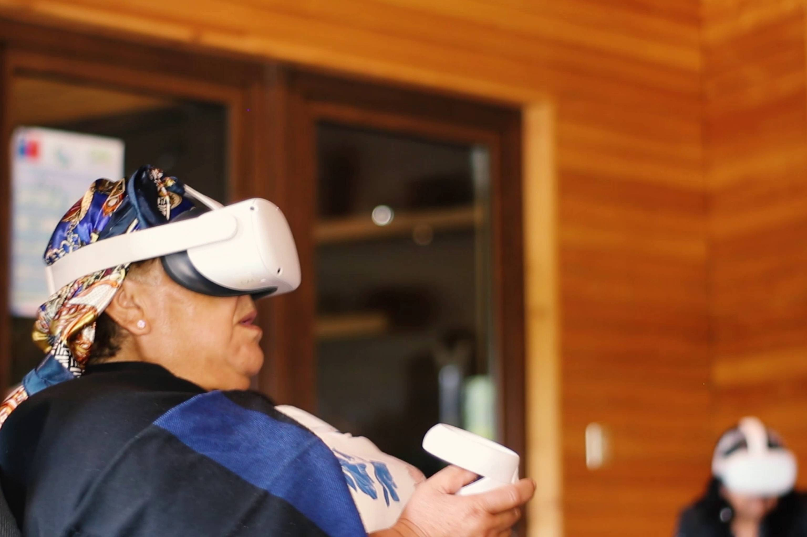

El Núcleo Milenio YEMS se adjudicó fondos para impulsar nuevas iniciativas de enseñanza y divulgación de la astronomía en Chile, a través de dos proyectos complementarios que promueven el aprendizaje activo, la reflexión sobre la habitabilidad y el diálogo intercultural.
Comité Mixto ESO–Gobierno de Chile 2026: astrobiología en la sala de clases a través del juego
El proyecto “Agentes Inmobiliarios Intergalácticos: Llevando la Astrobiología a la sala de clases por medio de un juego de mesa” fue seleccionado en el marco del Comité Mixto ESO–Gobierno de Chile 2026. La iniciativa surge a partir del kit educativo “Explorando Exoplanetas”, desarrollado por el Núcleo YEMS, que desde 2024 ha fomentado la educación y divulgación sobre sistemas planetarios en nuestro país.
Sobre esta base, el proyecto propone una aproximación lúdica e interdisciplinaria para vincular ambientes planetarios y organismos extremófilos, invitando a reflexionar sobre la habitabilidad y el valor único de la Tierra mediante el juego como herramienta pedagógica.
El equipo del proyecto está conformado por las investigadoras Alice Zurlo (UDP – YEMS), Irma Fuentes (YEMS) y Carla Hernández (USACH – YEMS – CIRAS), junto a la profesora Danitza García (Beta PUCV) y el diseñador Nicolás Baeza (Twinkl Chile), gestores originales de la idea. Además, el proyecto cuenta con la participación especial de la Dra. Jenny Blamey (USACH – CIRAS), experta en microbiología de extremófilos con amplia trayectoria en el área.
El proyecto tendrá una duración de 12 meses y cuenta con el patrocinio institucional de la Universidad de Santiago de Chile, además del apoyo de la Sociedad Chilena de Enseñanza de la Física (SOCHEF).

Kit Explorando Exoplanetas.
Revisa el juego Explrando Exoplanetas aquí:
Explorando Exoplanetas
ANID–Gemini y Fundación Astrodiálogos: mediación intercultural y tecnologías inmersivas
En paralelo, el Núcleo Milenio YEMS también se adjudicó fondos ANID–Gemini junto a la Fundación Astrodiálogos para el proyecto “Estrategias de mediación intercultural en astronomía: conocimiento mapuche y tecnologías inmersivas en contextos educativos y culturales”. La iniciativa es liderada por Daniela Tapia (Fundación Astrodiálogos) e involucra al académico USACH/CIRAS Sebastián Pérez.
El objetivo del proyecto es implementar un programa de divulgación astronómica en escuelas y espacios culturales de las regiones de La Araucanía y Los Ríos, promoviendo el diálogo entre la astronomía científica y la cosmovisión mapuche. Para ello, se incorporarán experiencias inmersivas en realidad virtual y actividades de mediación intercultural, buscando crear espacios de aprendizaje y encuentro que reconozcan la diversidad de saberes y formas de relacionarse con el cielo.
